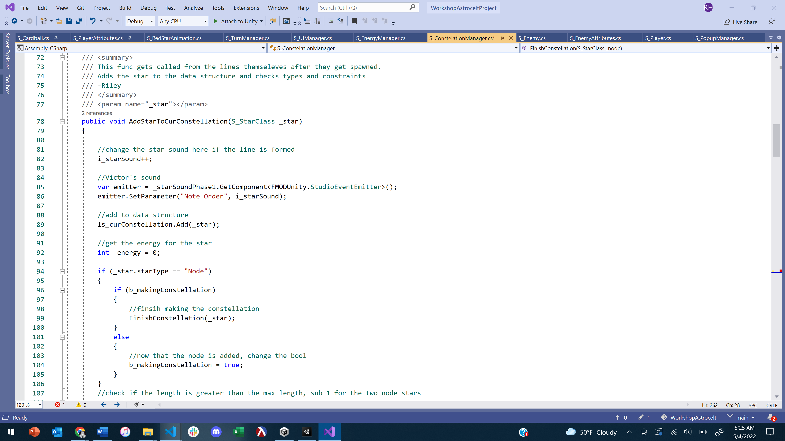
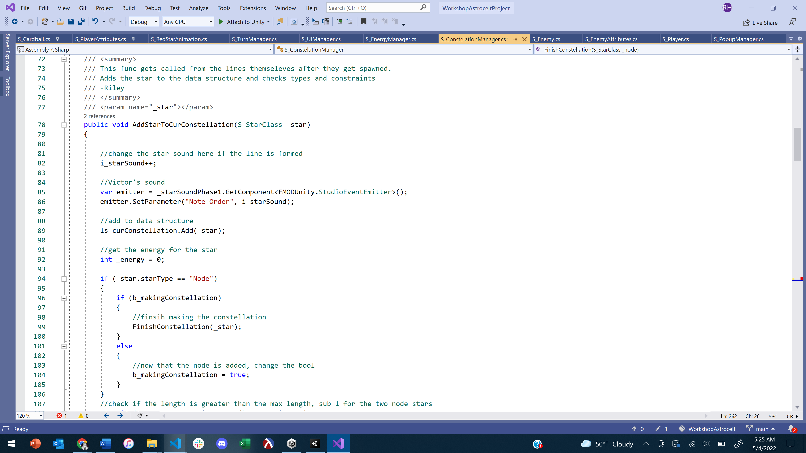

My Projects
Here you can find a breakdown of my projects, what I worked on specifically and code examples.
Erin and the Otherworld
 


Here are examples of my work while creating Erin and the Otherworld. There are examples of my imports and setting up public vars, a script to manage constellations the player is making, creating a card in the game, and spawning lines in the game world.
Madness Hunters


This section covers my time working to produce madness hunters. This was back when I was still figuring out unity so it is definitely a building block but there is good code to find. These scripts mostly deal with the player character, so movement, pulling companions, button presses, and raycasts.